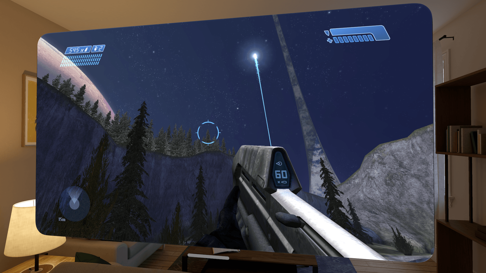

VISR
Halo: Combat Evolved for Apple devices
Experience Halo: Combat Evolved in a whole new dimension
VISR brings Halo: Combat Evolved to Apple Vision Pro and other Apple devices: iPhone, iPad, Apple TV and Mac.
The goal is to provide the best possible way to experience Halo while staying faithful to the original game. VISR builds on my love of the game and the many thousands of hours I have spent playing it.
Apple Vision Pro
- Full stereo VR with head tracking
- Foveated rendering
- The HUD in CE's own corners, out in the periphery
- Scope zoom fills the view
- Third-person cutscenes on a 3D screen in the room
- Support for gun / aim control with PSVR2 controllers

VISR also plays in 2D, in a window or on a virtual screen in the room.
iPhone, iPad, Apple TV and Mac
- iPhone and iPad: landscape play either on-screen or on an external display with touch controls or a game controller.
- Apple TV: controller play on the TV, with graphics profiles for Apple TV HD and Apple TV 4K models.
- Mac: a native Mac app, with capped or uncapped rendering.
- Graphics profiles tuned for Apple devices
Get it
Installing, setup and configuration are in the README on GitHub.